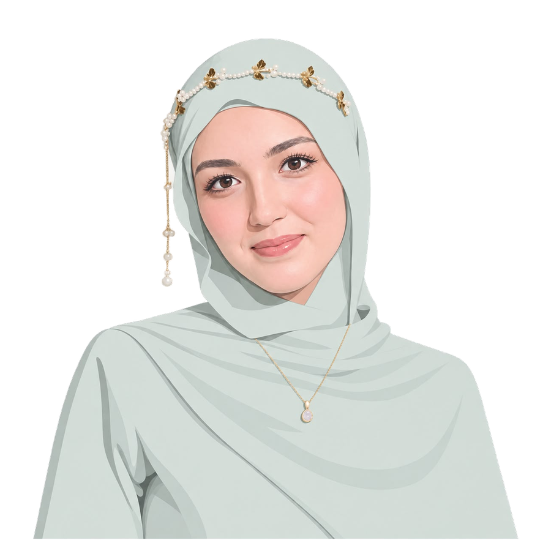

Business · Technology · Entrepreneurship
I turn ideas into things that work.
I'm interested in the space between business and technology — spotting opportunities, solving problems, and building ideas into something real. From AI tools to new product concepts, I'm always exploring what's possible.
- 3 languages (AR native · EN & FR fluent)
- Remote async-friendly, US & Tunisian teams
- 2027 BSc expected · TBS


A little about me
I'm Tasnim, a Business Analytics student at Tunis Business School
with an entrepreneurial mindset and a curiosity for how things
work.
I like spotting problems, exploring opportunities, and figuring out
how to turn an idea into something useful. That curiosity has led me
to work on projects involving AI, automation, data, and software —
not just to learn new technologies, but to see what I can actually
build with them.
I'm often juggling ideas, testing approaches, and learning along the
way. I enjoy connecting the business side of a problem with the
technical side of its solution, and I'm interested in what happens
when a good idea meets the right execution.
For me, learning isn't just about knowing more. It's about being
able to do more with what I know.
Based in Tunisia, always curious about what's next. 🌸
- Based in Tunisia
- Remote / async friendly
- Excel → Python, analyst-to-builder
- Arabic · English · French
Skills
Building with code & AI
Turning ideas into action
Experience
-
Jul 2026 — Present
Prospection & Business Development
Graines d'Entrepreneur · Tunisia
I help connect an entrepreneurial program with potential participants and partners by researching prospects, reaching out, and keeping conversations moving.
-
2025 — Present
AI Training Data Specialist
Innodata · Remote (US)
I work on AI training tasks where attention to detail matters. My work involves preparing and reviewing data to help improve the quality of AI systems.
-
Jun — Sep 2025
Appointment Setter & CRM Automation
BPOHomes Inc · Remote (California)
I worked with a US real-estate team, reaching out to leads, setting appointments, and supporting agent recruitment. I also worked with GoHighLevel to organize CRM workflows and make follow-ups easier to manage.
Featured projects
Six builds, from the spreadsheet to production.
01
Tandim
Making order management easier for Tunisian businesses.
Running a small business shouldn't mean spending hours organizing
WhatsApp messages and chasing orders. I built Tandim, an
AI-powered platform designed around how Tunisian merchants
actually work. It turns WhatsApp screenshots and voice notes in
Tunisian Derja into structured orders, helps merchants track
deliveries, and flags potential return risks based on customer
history.
02
Guide
A more thoughtful way to travel.
A good travel plan should fit your life, not the other way
around.
I'm building Guide, a travel-planning app that takes prayer times
into account when organizing routes and places to visit. It
combines a Flutter mobile app with a backend to make planning more
practical and personalized.
It's a work in progress, built around a simple idea: technology
should adapt to people.
03
Bakery Sales Analytics
Turning sales history into smarter baking decisions.
What if a bakery could bake smarter, not just more?
I analyzed bakery sales data to explore what sells, when demand
peaks, and where food might be going to waste. I used Python to
clean and prepare the data, designed a data model, and built
interactive Power BI dashboards to make sales patterns easier to
understand.
The goal: less guesswork, less waste, and more informed decisions.
04
AI Phishing Detector
Spotting suspicious emails before they fool you.
Not every email deserves your trust.
I built a machine learning model that analyzes email text to
identify potential phishing attempts. I then connected it to a
FastAPI backend and a Chrome extension to explore how the model
could be used beyond a notebook.
The idea: make machine learning useful in everyday situations.
05
ML Fake News Detector
Can a machine learn to spot misleading news?
I built a neural-network text classifier to explore how machine
learning can distinguish between fake and real news articles. I
also created an interactive R Shiny dashboard so users can explore
word patterns and model performance without needing to read the
code.
A project about language, data, and the challenge of making sense
of information online.
06
J.A.R.V.I.S. Desktop Assistant
An assistant that does more than answer questions.
I wanted an assistant that could do more than answer questions, so
I started building one.
J.A.R.V.I.S. is a voice-controlled desktop assistant that listens,
responds, and can use tools to carry out tasks. It brings
AI-powered conversation, voice interaction, and desktop
automation together in one project.
This is where my interest in AI meets my love of building things
from scratch.
Learning the business behind the data
BSc in Business Administration
Tunis Business School · 2023 — 2027 (expected)
My studies bring together business, analytics, and technology. They help me understand not only how to analyze a problem, but also how to think about the decisions and opportunities behind it.
Coursework: Business Analytics, Data Mining, Machine Learning, BI, Information Security.
A few things I've been learning
- Working with the OpenAI API — DataCamp, 2025
- AI Engineer for Data Scientists track — DataCamp, in progress
Languages
- Arabic Native
- English Fluent
- French Fluent
Have an idea? Let's explore it.
I'm always interested in good ideas, interesting problems, and people who enjoy building things. Whether it's a project, a collaboration, or an opportunity to try something new, let's talk.